Our Story · San Clemente
Before Del Mar,
there were Mamá and Papá.
Margarita and Salvador Avila started El Ranchito in Huntington Park in 1966. The restaurant was new. The recipes were already part of the family.
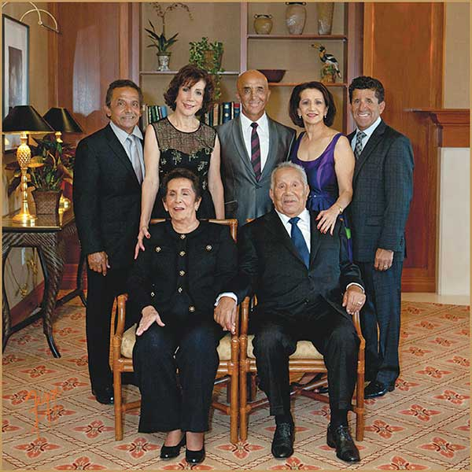
Mamá Margarita Avila
Recipes carried through generations in Guanajuato, Mexico. Mamá brought that cooking to the first El Ranchito.
Papá Salvador Avila
Papá had the idea to make it a family restaurant. Everyone would have a part in getting it started.
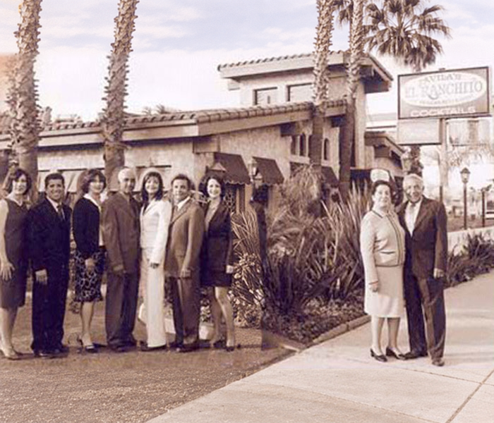
Five picnic tables.
Everyone pitching in.
The first restaurant began with five picnic tables. Even Grandpa Poldo helped with the dishes.
That small beginning is worth remembering. Before there were different neighborhoods and new generations, there was a family working together to feed people.

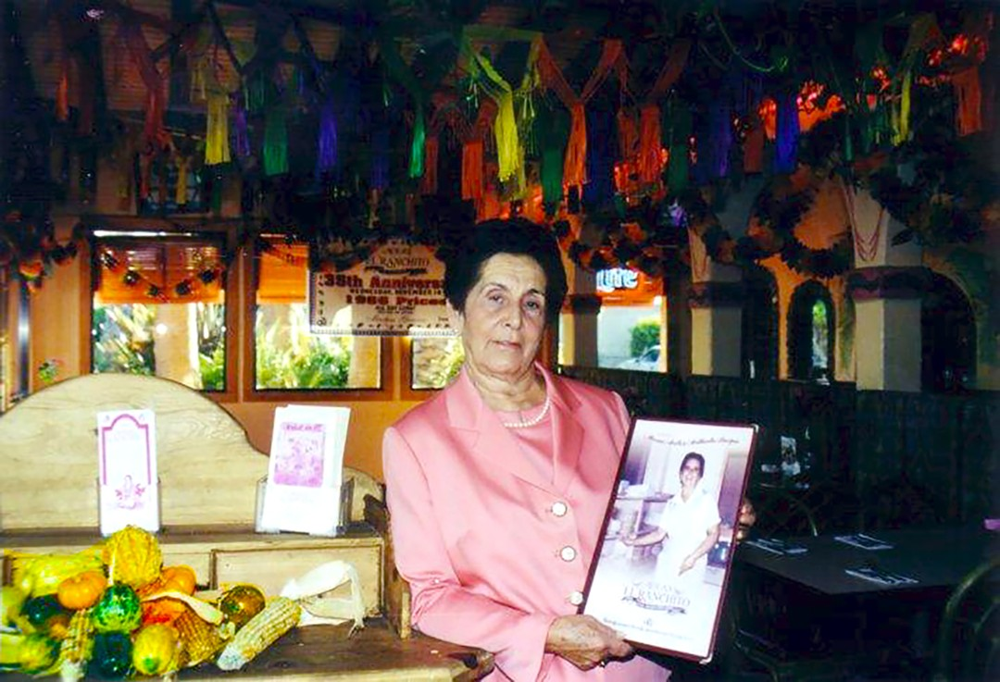

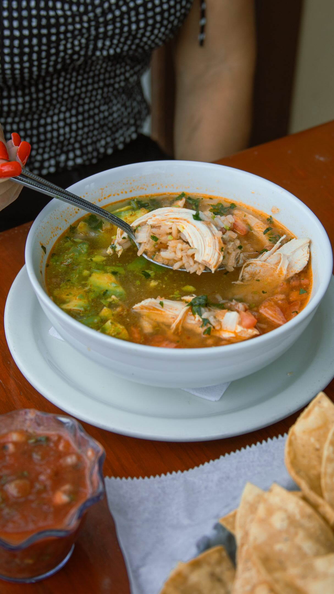
About these photographs
Mamá Margarita Avila’s portrait comes from the family archive, shared in May 2022. The original post does not identify the restaurant or when the photograph was taken.
Mamá’s portrait on Instagram ↗The soup photograph comes from the restaurant’s San Clemente Instagram collaboration.
Soup photograph on Instagram ↗The people.
The memories.
Mamá, Papá, and generations together. A few moments from the Avila family album, shared with you.

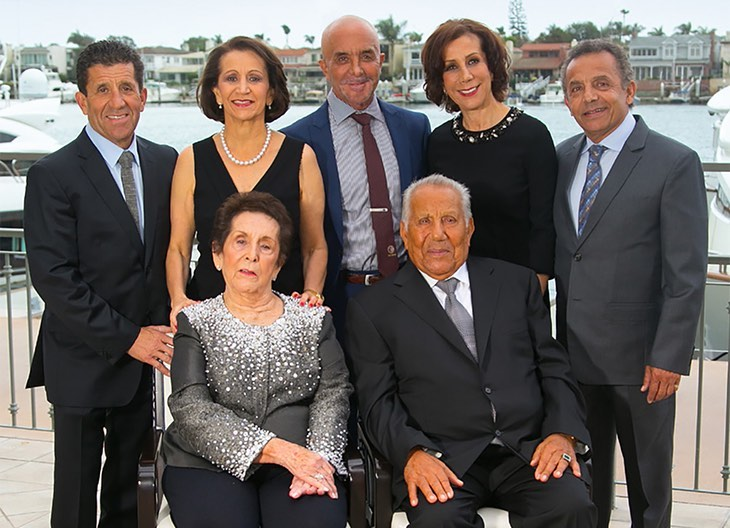
The family behind the name
About this photograph
Family archive · shared May 2023Photo source ↗
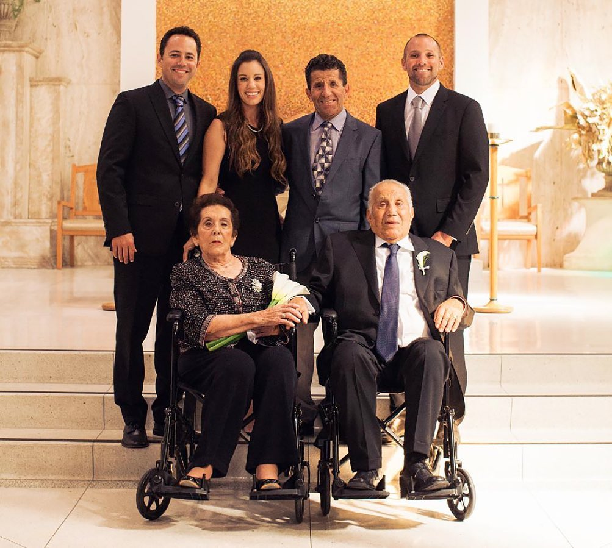
Generations together
About this photograph
Family archive · shared November 2022Photo source ↗
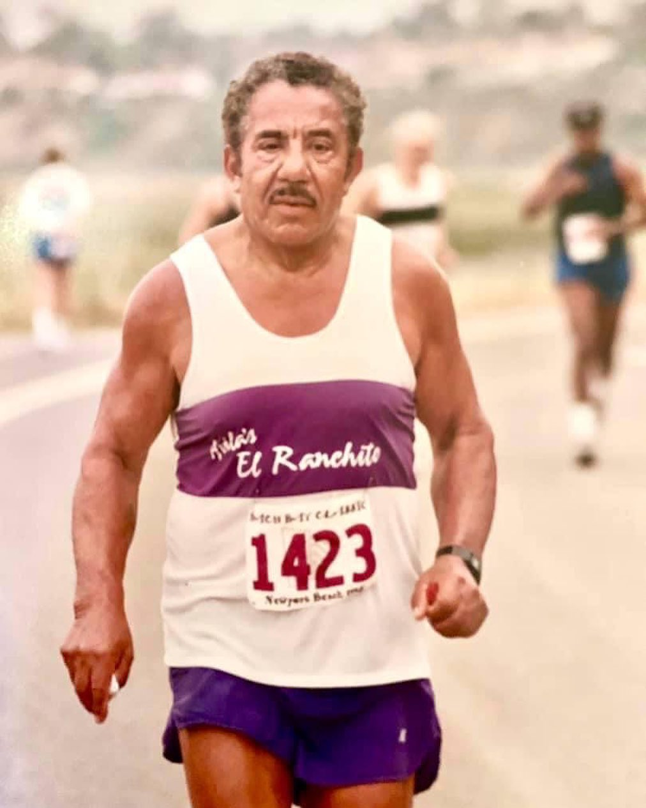
Papá, beyond the restaurant
About this photograph
Family archive · shared August 2022Photo source ↗
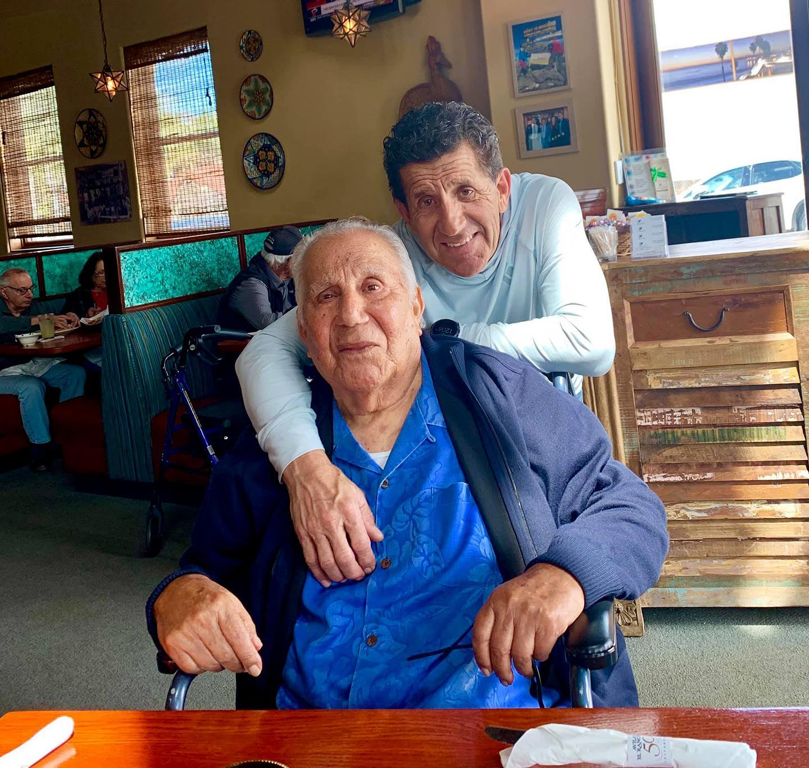
A moment with Papá
About this photograph
Family remembrance · shared August 2022Photo source ↗
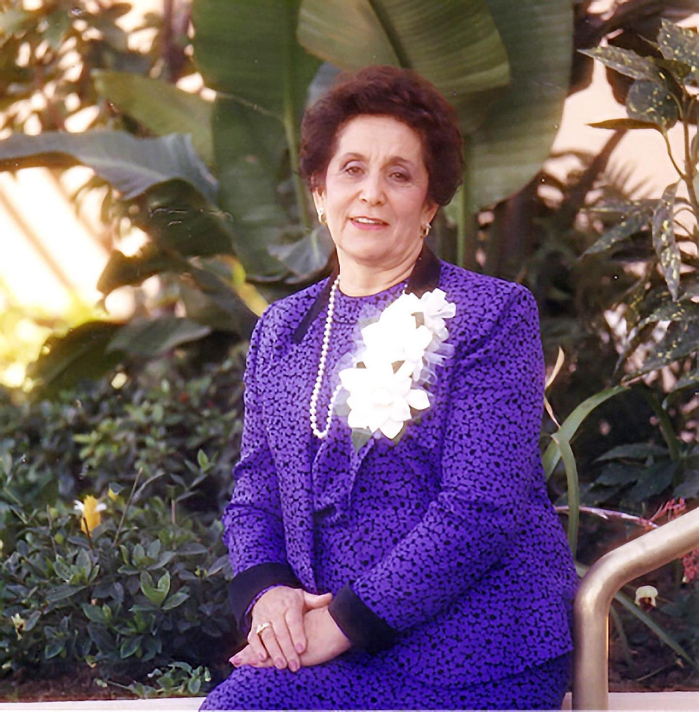
Remembering Mamá
About this photograph
Family archive · shared May 2021Photo source ↗From the wider Avila family archive, shared by @avilas.san.clemente. Dates refer to when posts were shared, not when photographs were taken. Family photographs are not presented as San Clemente location photographs.
With thanks to our community · From the archive

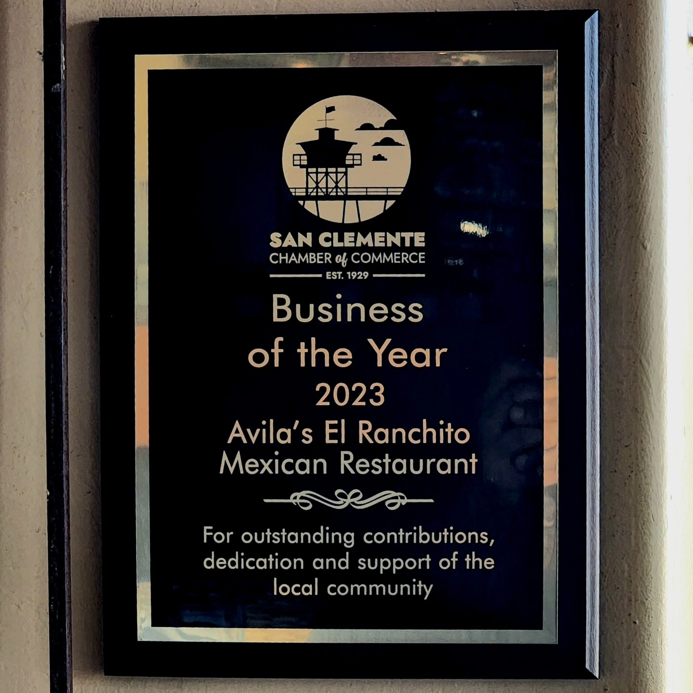

The Chamber plaque recognizes San Clemente in 2023. The 2025 announcement concerns the wider El Ranchito restaurant family.
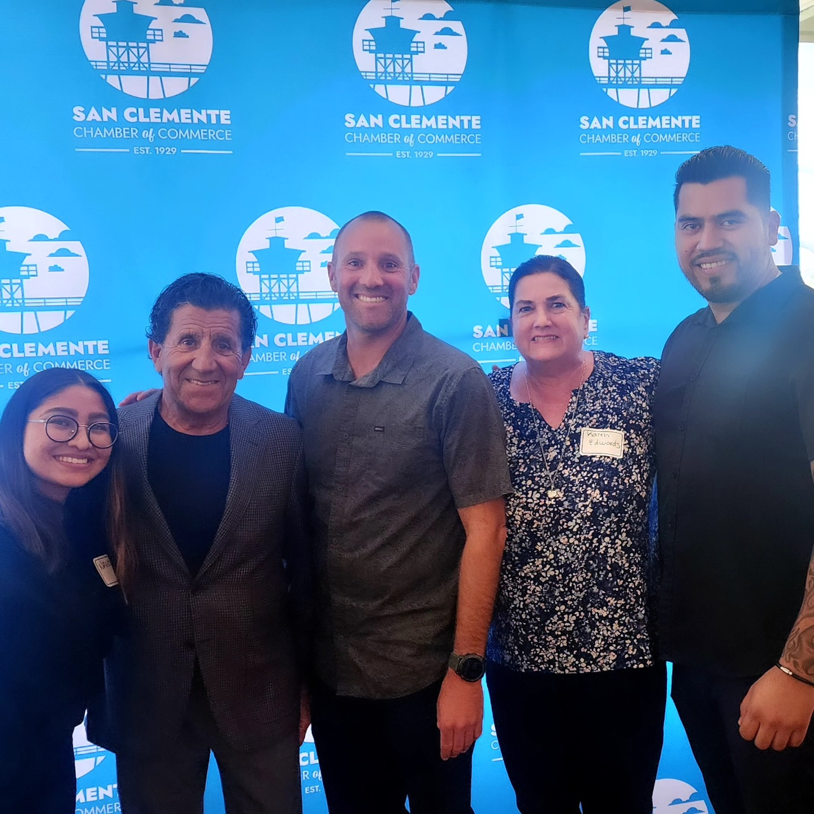
This chapter belongs
to the neighborhood.
To the locals who make us part of their week: thank you. For the lunch that catches everyone up, the birthday that brings the table together, or a familiar meal after a long day.
That’s the kind of place we want to be for San Clemente. And if you’re visiting for the first time, there’s a welcome here for you, too.
Near home or here for the day, make a little time around the table.
Plan your visit ↗Familiar faces.
A welcome that stays.
A restaurant becomes familiar through the people who care for it. A special thank-you to these longtime members of our San Clemente team.
- Karen EdwardsGeneral Manager
- Marvin Saenz
- Juan
- Jaime
San Clemente remains in Victor Avila’s hands, with Karen Edwards leading the restaurant as general manager. The family behind the name, and the people alongside them, keep this chapter going.
Watch the San Clemente story ▷You choose when to load the Instagram player. The original reel also opens directly on Instagram.
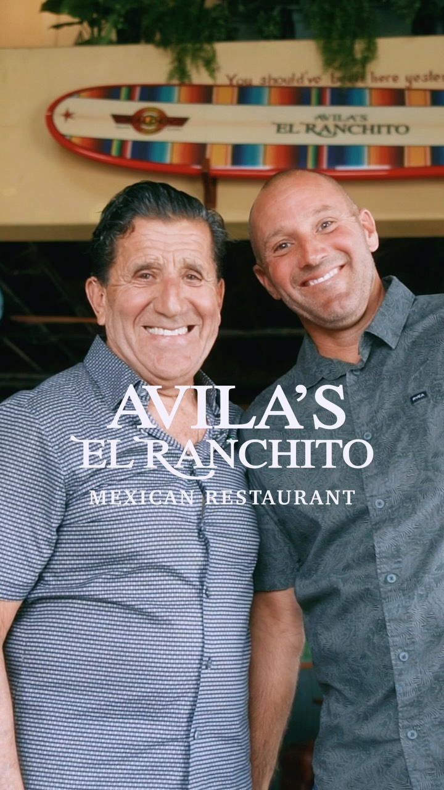
Make yourself
part of the story.
Whether this is your usual stop or your first visit, we’d love to welcome you to 204 Avenida Del Mar.
Story and photograph sources
- The Avila family’s official history and family photographs ↗
- Official San Clemente location story ↗
- San Clemente Journal, Mary Colarik, September 10, 2025 ↗
- @avilas.san.clemente on Instagram ↗
Family-history photographs belong to the wider Avila family story. They are not presented as photographs of the San Clemente restaurant.